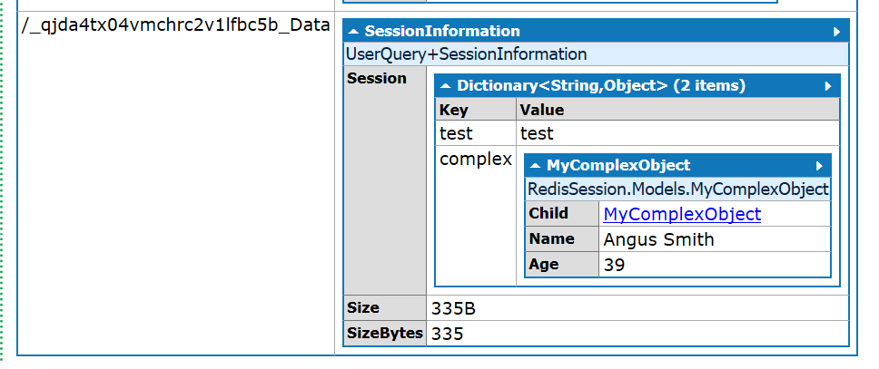

Using LINQPad as a Redis Client
Want to inspect object graphs being stored in a Redis cache? Use LINQPad.
Introduction
At my current client engagement we needed to look at what was being stored in the cache through Microsoft's session state provider. Unfortunately at present the Redis UI tooling available doesn't have a good story when inspecting data stored with the use of a BinaryFormatter.
One of LINQPad's many valuable features is that it does a very good job of letting you visualize object graphs.
The code
The code for the LINQPad script I used can be found here. It is specific to inspecting session state with the script only looking at keys with a _Data suffix.
You will need to add references to the Microsoft Redis session state provider. If you're licensed for the developer or premium edition then you can simply add the Nuget reference, otherwise, you will need to stick with standard binary references.
Also, don't forget to include references to any types being stored in session, otherwise, the deserialisation will fail.
Finally, even if you aren't interested in looking at session state, you can easily modify the script to look at more general usage of the Redis cache.
What it looks like
All through the magic of LINQPad -

Extending the script
One thing I found really useful through the use of LINQPad was I could write code to analyse (reduce / map, filtering, etc) the data being stored in session, which is especially useful when there is a lot of noise.